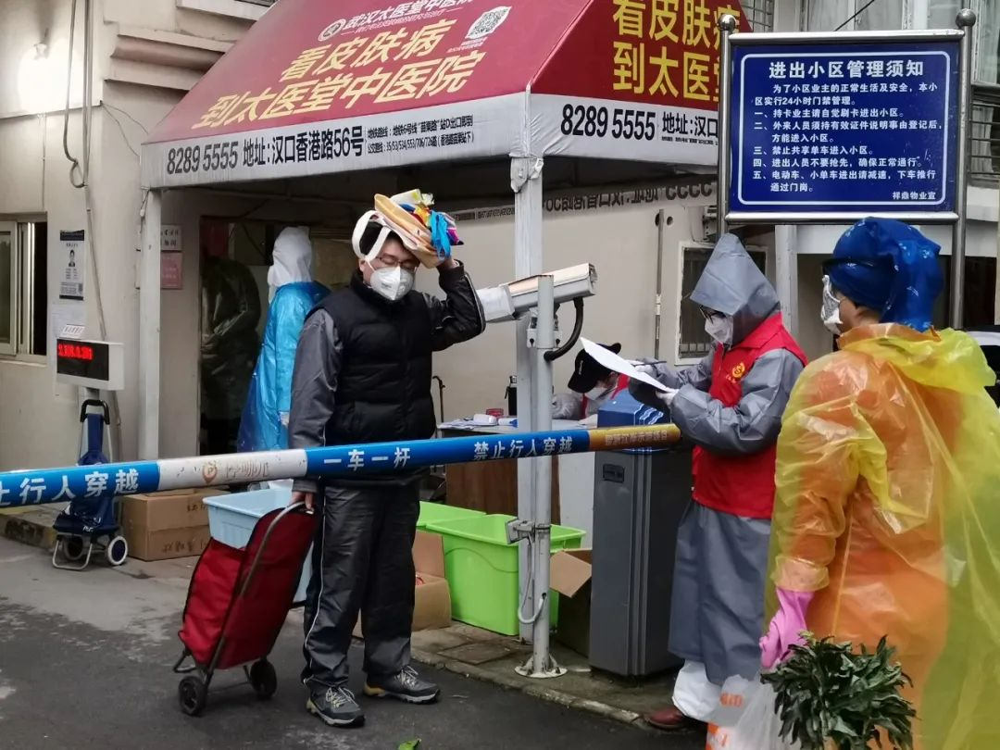
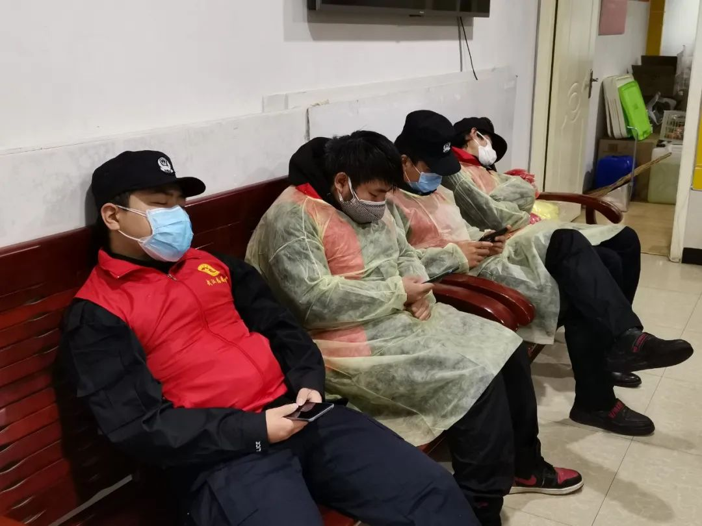
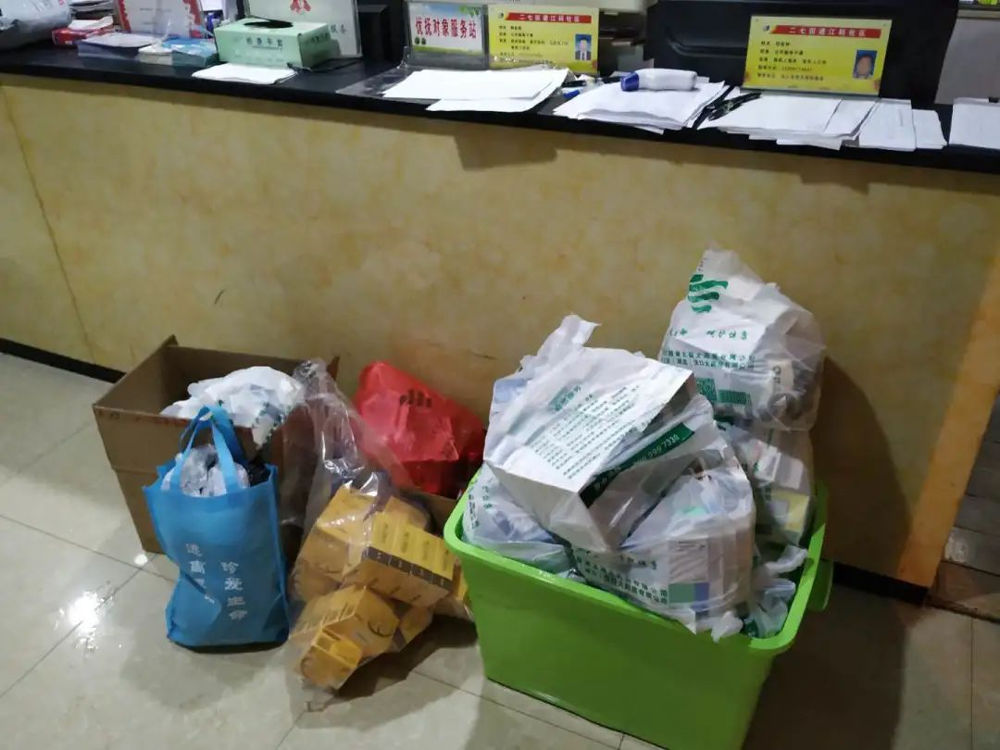

武汉大爷：我只要草纸，就别捆绑卫生巾了吧
原文链接 备份链接 武汉嫂子“汉骂”视频 “汉骂”嫂子和作家方方 数日前，一段微信语音在网上“一骂而红”，名叫“@雨儿”的业主在她所在的小区群里，用中气十足的武汉方言痛斥社区和中百超市推出“阴阳套餐”，社区推卸责任、置若罔闻。 “我们买一 …
澎湃新闻记者 温潇潇 实习生 孟津津
武汉市江岸区江码社区火了。
2月22日晚，该社区下辖的滨江苑小区业主微信群里，一名女业主激动地连发数条语音，怒骂中百超市针对不同小区发布“AB阴阳套餐”，买米要搭配草纸和酱油，社区不回应业委会诉求等。语音信息随后迅速传遍网络、引发热议，人称“武汉嫂子十级汉骂”。
事发第二天，社区便与中百超市协商取消了团购套餐，附近的家乐福超市成为居民团购的新供货商，团购之外的其他物资则由社区进行统一代购。

武汉嫂子“汉骂”事件后，涉事中百超市取消团购套餐，改由社区收集居民需求，开放全品类购买。
对于被指有“阴阳套餐”，涉事的中百超市店长称：“我们的店不大，套餐不可能满足所有人的个性化需求，都是我的顾客，我基于什么目的会区分对待呢？”
此事发生后，江码社区书记朱莉很难受，她坦言，面对辖区内6500多名居民，社区在岗工作人员只有十一人，情急之下只能先关注解决生活必需品，工作没有做细，但绝对不存在AB阴阳套餐。
2月11日，为加强新冠肺炎疫情源头管控，最大限度减少人员流动，武汉全市范围内所有住宅小区启动实行封闭管理。2月18日起，武汉各区超市不再面向个人销售，只接受社区组团购物。这一系列措施意味着，社区基层工作人员刚准备告别分类转运病人的紧张慌乱，转身便要接住保障辖区内居民基本生活的接力棒。

郭宏坤（右）正与社区志愿者沟通工作事宜。
严控人员进出、帮助居民买菜买药、继续排查上报“四类人员”、协助物业消毒消杀、照顾有困难的特殊人群等等都是社区的工作。
疫情发生以来，朱莉常常觉得身心疲惫，生怕因为疏忽大意，造成局面失控令更多居民感染新冠肺炎。如今，面对居民个性化的生活需求和情绪宣泄，他们即便难以应对，也不能崩溃。
她曾经尝试理解“武汉嫂子”：“她说得确实没错，每个人的需求不同，我们在这件事上没有考虑得那么周到。”
最终，社区向居民表达了歉意。
“第一次做，没有把工作做细”
滨江苑小区一名曾姓居民向澎湃新闻（www.thepaper.cn）回忆，中百超市曾推出的套餐分别以生鲜和干货为主。其中，生鲜套餐300元一份，包括肉类以及蔬菜，但肉类偏少，自己曾买到的套餐只有两三斤排骨。干货套餐则包括大米、酱油、卫生纸等，270元一份。她认为套餐价格偏高，而且由于无法单独购买，总会买到自己不需要的东西，觉得有些浪费。
她记得，套餐推出两三天后，就因“武汉嫂子汉骂”投诉而取消了：后者在微信群里质疑超市捆绑销售大米、酱油和卫生纸，套餐价格高，社区与业委会沟通不畅、服务不到位。
涉事的中百超市店长不愿接受进一步采访。她只表示，滨江苑与其他小区相比，社区报来的套餐确实“粗”一些，但超市绝不存在捆绑销售，也没有区分对待，无论哪种套餐，都是生活必备品：“多的什么都没添进去，可能有些人家里有，觉得多了就不舒服。”
江码社区书记朱莉则感到措手不及：“当时听到群里飙汉腔，心里特别难受，我们第一次接手大型团购，居民人数太多，就直接沿用了他们头一天订过的一个套餐，报给中百，我感觉套餐还是比较合理的，可能只是套餐刚好重复了她家里有的东西，比如酱油醋。”

江码社区滨江苑小区门口，居民们正排队领取生活物资，一旁的社区工作人员正在进行记录。
每每提到被“武汉嫂子”指责的套餐，朱莉都会解释，社区面对的是滨江苑一、二、三期所有业主，即总共2100户、6500多人的服务对象，因此“只能提供必需品”。
后来，朱莉了解到，“武汉嫂子”一家有5口人，包括老人和小孩。意识到他们需要的生活物资可能更加精细后，她开始理解对方，甚至开始反思：由于精力有限，社区对一大部分健康的居民有所疏漏，跟居民沟通少了，没有通过更多方法去解决居民的生活问题。
最终，社区向居民表达了歉意。“汉骂”风波的第二天，据“武汉发布”通报，社区与中百超市协商取消团购套餐，附近的家乐福取而代之成为居民团购的新供货商，其他个性化物资需求由社区代购补齐。
“需求小纸条”和超级热线
对于什么是个性化物资需求，郭宏坤翻出了一本复印册，上面满满当当都是居民希望社区帮忙采购的物资：“如果有人不用手机、不在（微信/网格）群里，或者不团购，我们也可以想办法。”
郭宏坤原是江码社区的残疾人协理员，同事们称他为“一把手”：他十几岁时出车祸，只剩下一条右臂和一条右腿，他的工位被安排在社区办公室最靠近门的第一个座位，2007年就来到社区。他站起身时，仿佛有两条完整的腿一样稳当，左边袖口插在兜里，看不出残疾。

江码社区附近的一家药房门外，好几名社区工作人员或志愿者正等着排号为居民买药。
2月11日，武汉所有住宅小区启动实行封闭管理。2月18日起，武汉各区超市不再面向个人销售，只接受社区组团购物。小区封闭后，郭宏坤负责沟通协调居民的个性化需求。
他坚持请居民把要购买的物资写在小纸条上，递给门岗志愿者，由志愿者送来社区，他再安排社区专用车载着志愿者出去买：“虽然复杂一点，但我要保证不能乱，我们吃了太多亏了，（比如）有人明明要五花肉，买回来他又说要排骨。”
小纸条容易丢，郭宏坤便一一复印在A4纸上装订起来。有空巢老人写：“花生米3斤、黄豆3斤、干子20块、带鱼2条/盒，谢谢。”有人一口气写了16项，肉类和蔬菜3斤起；有人点名叫热干面；还有人点了十包烤馍和两条黄鹤楼“峡谷情”细支香烟。
由于超市进货渠道有限，很多东西不好买。有时看着居民报来长长的清单，郭宏坤惊呆了：“这是要办年夜饭么？都不是生活必需的啊。”
疫情爆发后，郭宏坤的电话变成了“超级热线”。社区发布的通知大多附上了他面前的座机电话号码。起初，他负责记录居民身体不适的情况，联络社区医生，协助书记朱莉联络街道争取床位。那时所有人都慌了，任何头疼脑热都会找来。撑了十多天后实在受不了，郭宏坤改为守到晚上10点，再换小区安保人员继续守。
如今这些问题已经解决：只要发现疑似病例，社区可以立即把人送到隔离点，安排做核酸检测和CT。郭宏坤开始头疼老百姓的需求：“各种各样的需求，他们不是为了活下去，而是追求高层次、个性化。平时无所谓，现在我们哪有精力去满足这些呢？还没谈到娱乐，你别吓我。”
他的水杯里浸着厚厚的一层茶叶：“提神用的，不能窜瞌睡。”

中午时分，社区志愿者们坐在社区办公室的长椅上打盹。
居民们的慌张
滨江苑一名罗姓居民表示，自己能理解特殊时期社区的辛苦，但他仍然焦虑。因为他已经宅在家里一个多月，担心自己经营的食品生意“黄了”。没有收入来源，而且还在还贷款。
最近一次，他给社区递纸条，希望买一箱可口可乐、三袋热干面、六瓶茶π饮料，三袋牛肉干和一袋味精，最后却只收到一袋味精。
他也曾浏览过网上商超推出的套餐，却发现主要是各种肉类、蔬菜，几乎没有其他选择，而他平时很少做饭。对他来说，洗漱用品、速食、饮料就是日常。有时烟瘾一上来，没烟抽的滋味更难受：“社区的工作不可能让每个人都满意，但疫情这么长，大家都需要志愿者的帮助，做不好可以学，只希望能满足大众需求。”
小区实施全封闭管理，大家从未见识过这样的场面，部分居民不止焦虑，甚至开始出现情绪崩溃的迹象。
郭宏坤接到过一通电话，有居民要30个鸡蛋、2斤胡萝卜、2斤土豆、3斤苹果、一个大白菜、一个包菜。这名居民说自己已经八天没有采购，实在受不了了，已经跟超市“打好招呼”，确定能买到，要求社区立即派人去买。
考虑到社区人手紧张，郭宏坤便答应第二天去。对方却怎么也不听，根本不让他插话，他只好把电话交给社区志愿者，对方没说两句又开始讲起了英文。挂电话前，这名居民要求社区帮忙把垃圾扔下去。
一名小区保安用额温枪测量体温为38℃，周围人一下炸了锅，赶紧把他安排到物业单间宿舍，找来水银温度计，每两小时量一次体温，但一整天都没有超过37℃，也没有其他症状。物业便继续安排保安上班，结果郭宏坤不断接到居民投诉，要求将其开除。
部分居民不相信小区会定期进行消毒消杀，要求社区拍照证明，郭宏坤只好建议物业消毒时喊喇叭提醒居民。2月初，小区走了一位独居老人，去世前曾出现过发热，但核酸检测为阴性。为小心起见，物业给楼栋走廊做了一次消杀。时隔近半个月后，邻居仍不放心，开始给社区打电话，担心房里“养了一屋子病毒”，要求给老人家里也消消毒。郭宏坤没办法，后来邻居们举报到了市长热线。郭宏坤说，最近听说整栋楼都在找老人的儿子。
郭宏坤很头疼：“怎么说呢？草木皆兵啊，一点科学常识都没有了。”
国家卫生健康委专家组成员、北京地坛医院感染二科主任医师蒋荣猛曾向媒体介绍，病毒通过飞沫或接触传播，飞沫离开人体后，很快会沉降，不会在空中漂浮。研究发现，病毒在人高频接触的地方（如电梯按钮、门把手等）存活时间长，在光滑物体表面只能存活数小时到五天不等。

最忙碌的一天，李达吉为32户重症、22户轻症居民买回的药品。
重症慢病者的用药保障
小区封闭管理后，武汉市其他重症、慢性病患者购药一度成为难题。
2月27日中午12点左右，江码社区工作人员李达吉来到附近药房，跟进志愿者领号排队。他负责给社区居民买药送药。
天空飘着淅淅沥沥的小雨，志愿者身上挂着雨衣，手上攥着“15”的排号，一上午才排到5号：“第一个人就买了50户的药。”药店大门开了一半，一张桌子横放在门口，买药的人在这里登记后拿药，门帘是放下来的，只能透过落地窗看到里面的景象。
李达吉说，别看排队的人不多：“每个人手上至少有几十个单子。”这段时间最忙的一天，他曾接到32户重症、22户轻症其他疾病患者的用药需求，每人还有一份清单。那天，他全部买完送到已是凌晨两三点。
他更担心的是“扑空”。为尽量一次性买齐药品，他一般先跑药品相对充足的大药店，有时也会加小药店微信，抽空打听他们的供货情况。
据长江日报报道，起初武汉市只有两家重症慢病定点药店，其中汉口大药房黄石路店提供的药品最齐全（包括10个病种：高血压、糖尿病、血管介入术、乙肝、丙肝、肝硬化、恶性肿瘤、慢阻肺、肾移植术后、帕金森）。然而购药供需矛盾日渐明显，于是武汉分别于2月11日、24日和25日扩展重症慢病定点药店至50家，并确保这些药店可以使用医保。
李达吉的实际感觉是，定点药店增加后，重症慢病药确实好买了，但仍面临排队时间长、需辗转不同药店买药、部分药品不齐全、药品厂家和规格与居民需求不符等问题。
前两个问题李达吉累一点还可以勉强解决，但如果药店只能提供其他厂家规格的药，他会先帮居民买下来：“因为没有那么多时间判断。”送药时，他再叮嘱居民仔细遵照说明服用。
李达吉每天都要加几十个好友，有用药需求的居民通常会点对点找到他。除了重症慢病，普通药物也有需求。因此他每天要看很多微信，如果看后不能及时处理，他就先置顶聊天，等有时间再处理。
社区的其他工作人员心疼李达吉，因为他已经很久没好好睡过觉。李达吉说，自己也想找人帮忙，毕竟买药的工作更细致，绝对不能出错。但志愿者大多不愿意做：“大家认为买药比其他工作风险更大。”
2月底，社区新招募了十位志愿者，却没能帮上李达吉，因为全部被安排在社区测体温。三十几个党员下沉干部则忙着轮班守门、分发物资和维持秩序。李达吉很无奈：“封闭小区真的是头等大事。”
“武汉嫂子”当了志愿者
2月下旬，江码社区滨江苑曾有一名居民冒充志愿者溜出了社区。
社区专用车司机潘师傅回忆，这名“假志愿者”拿着社区开的代购证明进了超市，等他推着满满当当的两车物资出来时，潘师傅才意识到被“忽悠”了：“每种东西只买了一样，比如排骨，就买了一整块，其他都是一份，不像别人（志愿者）的的确确为大家服务。”
这件事把社区的工作人员们气得够呛。有工作人员形容这是因为居民“在家快被逼疯了”。
郭宏坤介绍，目前可以出入小区的人员仅限于防疫工作者、需要紧急送医的居民，以及其他社区无法协助解决的特殊情况（如必须本人去医院取处方药等）。防疫工作者展示单位证明后，只要测量体温正常即可出入。其他情况同样需要向社区提供证明材料。
但他也碰上过几次例外，有人总能想出冠冕堂皇的理由混出去。他想不明白有些居民为什么一定要出去：“外面啥也没有。”
他后来又转念一想：“唉，被关了一个多月了。”
“武汉嫂子汉骂”事件后，社区书记朱莉曾和这位“嫂子”打过一次电话。她记得对方提到，长时间待在家照顾5口人，需要的物资不仅多且细，精神情绪上的压力也很大。
朱莉慢慢开始理解“嫂子”。她也会辩证看待这次事件，将它看作一次提醒：不仅要解决问题，还要通过更多方式有效地解决问题：“如果大家都能通过这件事意识到差距或者做得不周到的地方，也不是一件坏事。”
“武汉嫂子”所属单位的一名负责人介绍，目前“嫂子”已成为一名社区志愿者，加入社区防疫工作。
2月27日，李达吉向记者展示江码社区当天接到的最新通知：为避免人群过于集中，即日起，社区除套餐外的个性化团购将缩减为每三天一次。
朱莉很想念从前的武汉：“我再也不会嫌弃马路上车太多跑不快了，非常怀念，我觉得那种生活特别特别美好。”她最想对居民说，也许社区做得不太完美，但社区最大的希望就是和居民一起战胜疫情，早日回到“人流汹涌、车水马龙”的生活。
戳这里进入
“全国新型冠状病毒感染病例实时地图”↓↓↓
本期编辑 常琛
推荐阅读


文章已于修改
原文链接 备份链接 武汉嫂子“汉骂”视频 “汉骂”嫂子和作家方方 数日前，一段微信语音在网上“一骂而红”，名叫“@雨儿”的业主在她所在的小区群里，用中气十足的武汉方言痛斥社区和中百超市推出“阴阳套餐”，社区推卸责任、置若罔闻。 “我们买一 …
原文链接 备份链接 他们理解小区被封，理解只能选择被塞了四大包汤圆的团购套餐，理解菜价成倍上涨，理解要继续忍受生活上的不便，才有可能早一点等来结束的一天。 文 | 谢婵 编辑 | 小豆 武汉伢王嘉兴给父母打电话，得知小区业主群里推荐 …
原文链接 备份链接 记者/杨宝璐 实习记者/胡琪琛 *编辑/计巍 宋建华* 林楠做的登记表 2月11日，武汉开始实行小区封闭管理，宅家里抗疫的武汉居民不得不面对又一重困难：如何买到每天饭桌上需要的蔬菜。 城市几乎停摆，但生活却不能。吃饭问 …
原文链接 备份链接 若干年后回望，这一定是一段值得铭记的日子。因为新冠肺炎疫情，许多家庭无法团圆。疫情数据地图的每次刷新都令人揪心。我们和千万武汉人在一起，这不只是一句安慰，因为没有人能够置身事外。 之前，我们向用户征集这段时间的故事， …
原文链接 备份链接 家住温馨苑的黄新陷入了愁苦之中。她丈夫疑似新冠肺炎，高烧十天，无法进食。因为生病，丈夫有点消极，唉声叹气，虽然还没有检测确诊，但他觉得自己基本就是新冠肺炎了。黄新不敢跟外人说，同事们聊起天来，她也不敢出声。“你家有 …